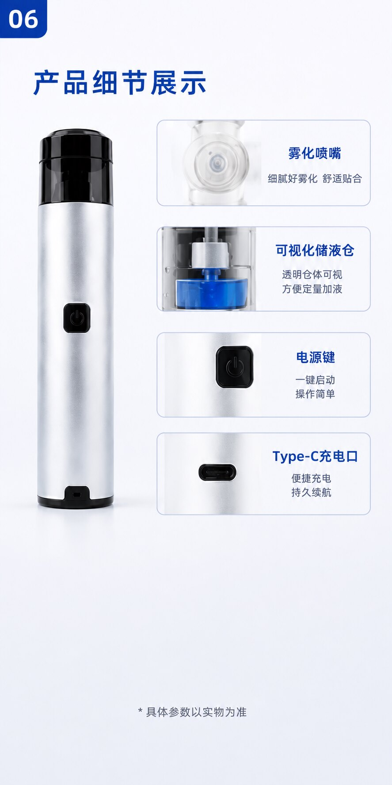

A transparent reservoir and nebulization nozzle are shown in the source material. Final reservoir volume, approved solutions and cleaning procedure must come from the applicable IFU.
MODEL RECORD / 01 ZY018G-I*

Portable ultrasonic nebulizer platform.
This product record translates supplied material into a buyer-readable B2B page. It separates visible/source-derived values from the details that require an official final model file.
MANUFACTURER SHOWNGuangxi Zegang Technology Co., Ltd. Technology Co., Ltd.*
MODELZY018G-I*
VISIBLE CHARGING PORTType-C USB*
VISIBLE STRUCTUREReservoir · power key · interface
REVIEW NOTICE Source-derived values must be confirmed against final model specification, intended use, compatible solutions and applicable documentation before market use.
02 SOURCE RECORD
Values extracted from the supplied parameter image.
The source image is retained below so that buyers can inspect the origin of the current information. Two fields display likely unit errors and are deliberately marked for correction.

Source image, not final English data sheet.
The visual lists model references, frequency, particle diameter, charging, cup capacity, weight, standard and Chinese registration/production licence lines. Request formal documents before public or regulatory use.
Request final data sheet ↗Product nameMedical ultrasonic nebulizer*
Model referenceZY018G-I*
Nebulization frequency2.7 MHz*
Particle diameter≤ 2.5 μm*
ChargingType-C USB*
Nebulization cupMAX line approx. 1.5–5 mL*
Working modeContinuous*
Net weightApprox. 92 g*
Battery field“500ml” shown in source — must be corrected
Dimension field“Φ26.5 × 213.5cm” shown in source — must be corrected
Standard fieldYY 0640-2016 shown in source*
03 DEVICE STRUCTURE
Visible components can be inspected without turning them into medical promises.
The supplied visual shows a compact cylindrical device, transparent reservoir area, power key, Type-C port and nasal/accessory interfaces. It does not establish liquid compatibility, treatment effectiveness or final kit contents.

The source material shows a U-shaped nasal interface and a single outlet attachment. Accessory names, materials, pack-out and instructions must be confirmed per configuration.
A power key and Type-C port are visible. Battery capacity, input rating, charge time and charging safety information are not confirmed for public use.
04 FILE REQUEST ROUTE
Request categories of evidence—not an unqualified certificate claim.
The supplied material includes Chinese registration and production licence references. They can start a document request, but do not themselves establish market access beyond their applicable scope.
Product record
Final specification, IFU, labels and packaging record.
Evidence path
Relevant testing, material and process information, subject to final scope.
Country context
Target-country requirements discussed before public claims are drafted.
Tell us country and model first.
That is the minimum context needed to build a responsible document checklist.
05 PUBLIC LANGUAGE CONTROL
Keep the website inside the final product file.
The supplied material contains nasal-condition and symptom-relief marketing. This B2B site does not use those claims or promise suitability for all ages, environments or liquid/medicine types.
| Suitable website language now | Not suitable until formal evidence and market review |
|---|---|
| Portable ultrasonic nebulizer platform for B2B evaluation | Treats rhinitis, relieves congestion or improves respiratory health |
| Model, configuration and documents reviewed per target market | Globally certified, suitable for all users or approved in all markets |
| Visible Type-C port, reservoir and accessory interfaces | Exact battery, size, compatibility or material claims from unverified source values |
Need a side-by-side model review?
Open the ZY018G-I-2 page and compare only facts confirmed for each record.